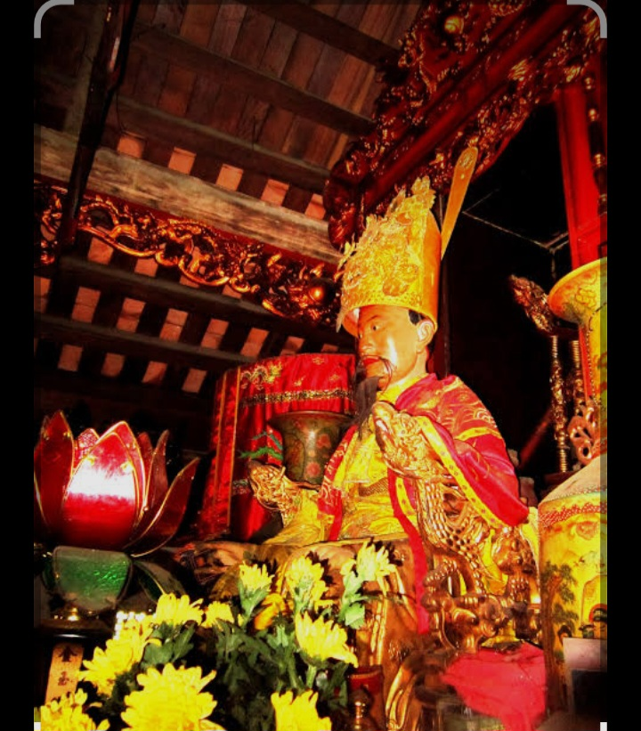

Quê hương
Ngô Quyền sinh ra ở Đường Lâm, khu vực Sơn Tây ngày nay, Hà Nội.
Khám phá cuộc đời, sự nghiệp và những đóng góp có ý nghĩa lịch sử của người anh hùng dân tộc gắn liền với chiến thắng Bạch Đằng năm 938.
Ngô Quyền (khoảng năm 898–944) là một nhân vật tiêu biểu trong lịch sử Việt Nam thế kỉ X. Ông sinh ra ở Đường Lâm, có tài năng và sớm tham gia vào những hoạt động chính trị, quân sự trong thời kì nền tự chủ của người Việt đang được củng cố.
Năm 938, Ngô Quyền lãnh đạo quân dân đánh bại quân Nam Hán trong trận Bạch Đằng. Ông tận dụng địa hình sông nước và thủy triều để tổ chức trận đánh, tạo nên chiến thắng có ý nghĩa đặc biệt đối với lịch sử dân tộc.
Năm 939, Ngô Quyền xưng vương và đóng đô ở Cổ Loa, tiếp tục đặt nền móng cho việc xây dựng chính quyền độc lập.

Những dấu mốc cơ bản về cuộc đời và sự nghiệp.
Ngô Quyền sinh ra ở Đường Lâm, khu vực Sơn Tây ngày nay, Hà Nội.
Ông hoạt động vào thế kỉ X, khi nền tự chủ của người Việt đứng trước nhiều thử thách.
Năm 938, quân dân dưới sự lãnh đạo của Ngô Quyền đánh bại quân Nam Hán trên sông Bạch Đằng.
Năm 939, Ngô Quyền xưng vương và đóng đô ở Cổ Loa.
Ngô Quyền lựa chọn địa hình sông Bạch Đằng và tổ chức trận địa phù hợp, giúp quân ta đánh bại cuộc tiến công của quân Nam Hán.
Chiến thắng góp phần bảo vệ nền tự chủ của người Việt và tạo điều kiện thuận lợi cho việc xây dựng chính quyền độc lập.
Nhóm lựa chọn Ngô Quyền vì ông có đóng góp quan trọng đối với lịch sử Việt Nam. Chiến thắng Bạch Đằng năm 938 thể hiện tinh thần yêu nước, ý chí tự chủ và khả năng vận dụng điều kiện tự nhiên vào nghệ thuật quân sự.
Tìm hiểu về ông giúp chúng tôi trân trọng nền độc lập và rút ra bài học về tinh thần đoàn kết, sự chủ động và trách nhiệm đối với cộng đồng.
Chọn một mục bên dưới để tìm hiểu sâu hơn.
Tìm hiểu quê hương, hoàn cảnh và con đường trưởng thành.
Khám phá →Khám phá những mốc thời gian quan trọng trong cuộc đời ông.
Khám phá →Tìm hiểu những đóng góp nổi bật của Ngô Quyền.
Khám phá →Tìm hiểu những khó khăn và cách Ngô Quyền ứng phó.
Khám phá →Phân tích ảnh hưởng của chiến thắng và sự nghiệp của ông.
Khám phá →Tìm hiểu những giá trị lịch sử và bài học cho thế hệ trẻ.
Khám phá →Xem hình ảnh, tư liệu và nguồn tham khảo của dự án.
Khám phá →